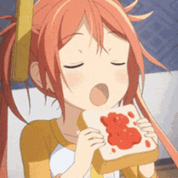

Bienvenido a la segunda parte de mi página web ;D
Si estás aquí es porque te interesó mi biografía y quieres saber más sobre mí. ¡Muchas gracias!<3
Una de las actividades que tambien disfruto y me apasiona hacer es cocinar.
Es muy satisfactorio cuando cocino para alguien y este me felicita por lo rico que está.
Sin duda, es una de las mejores sensaciones que puedo experimentar.
Por otro lado, también me interesan mucho los instrumentos. Aunque actualmente tengo una guitarra que no sé tocar D;
mi instrumento favorito es el piano. Espero algún día tener la oportunidad de aprender a tocarlo y disfrutar aún más de la música.
